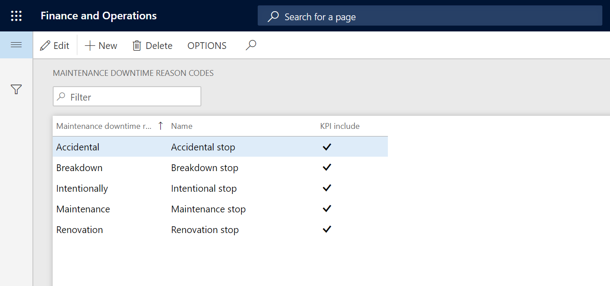
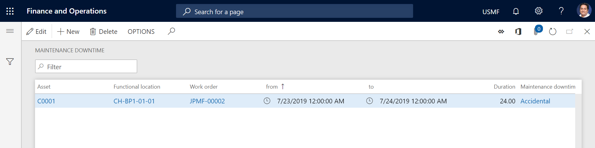
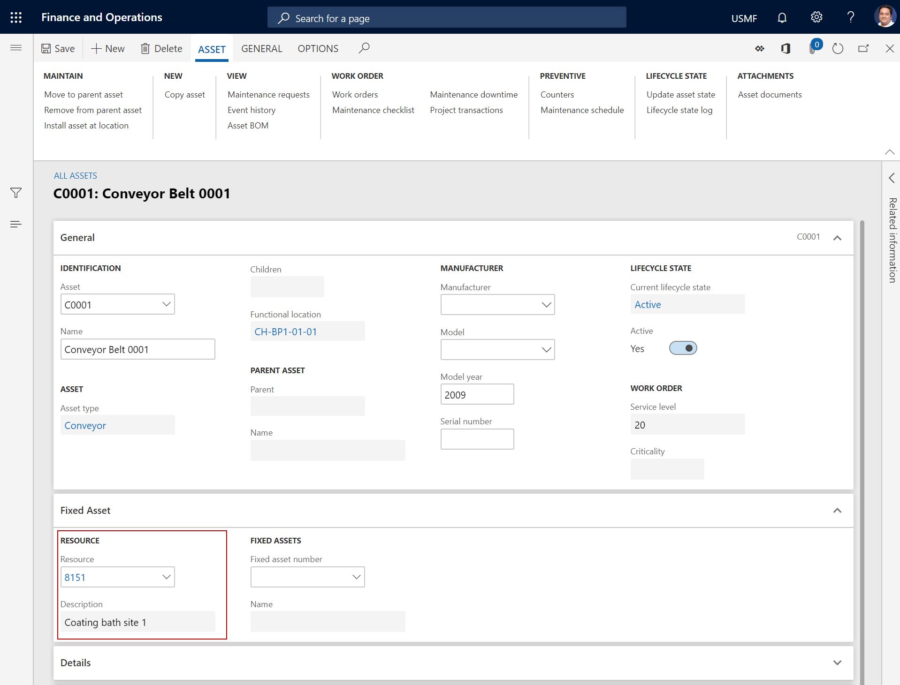
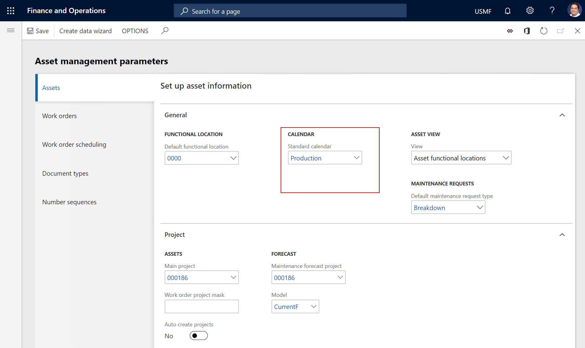

Wartungsausfallzeit für Arbeitsaufträge
Important
Dynamics 365 for Finance and Operations hat sich zu speziell entwickelten Anwendungen entwickelt, mit denen Sie bestimmte Geschäftsfunktionen verwalten können. Weitere Informationen zu diesen Änderungen finden Sie im Dynamics 365-Lizenzierungshandbuch.
Sie können Wartungsausfallzeiterfassungen für die auf einem Arbeitsauftrag ausgewählte Anlage anlegen. Dies ist hilfreich, wenn Sie Wartungsausfallzeit auf einem oder mehreren Computern im Produktionsbereich erfassen möchten. Zunächst erstellen Sie die Ursachencodes für Wartungsausfallzeit, die Sie verwenden möchten, z. B. Ausfall und Geplanter Stopp. Dies geschieht auf der Seite Ursachencodes für Wartungsausfallzeit. Als Nächstes können Sie auf der Seite Wartungsausfallzeit Wartungsausfallzeiterfassungen anlegen und die entsprechenden Ursachencodes für Wartungsausfallzeit hinzufügen.
Erstellen von Ursachencodes für Wartungsausfallzeit
Wählen Sie Anlagenmanagement > Einstellungen > Arbeitsaufträge > Ursachencodes für Wartungsausfallzeit aus.
Wählen Sie Neu aus.
Geben Sie im Feld Ursachencode für Wartungsausfallzeit eine Kennung für den Ursachencode für Wartungsausfallzeit ein.
Geben Sie im Feld Name einen Namen ein.
Aktivieren Sie das Kontrollkästchen KPI enthalten, wenn der Ursachencode in Berechnungen von Leistungskennzahlen (KPIs) für die Anlage enthalten sein soll. Im Allgemeinen sollten geplante Produktionsstopps nicht in die KPI-Berechnungen einbezogen werden, da sie die erwartete Leistung nicht beeinflussen.
Wählen Sie Speichern.
Die folgende Abbildung zeigt ein Beispiel der Seite Ursachencodes für Wartungsausfallzeit.

Wenn Sie die von Ihnen gewünschten Ursachencodes für Wartungsausfallzeit angelegt haben, können Sie Wartungsausfallzeiterfassungen für Arbeitsaufträge und Anlagen anlegen.
Erstellen von Wartungsausfallzeiterfassungen
Klicken Sie auf Anlagenmanagement > Allgemein > Arbeitsaufträge > Alle Arbeitsaufträge oder Aktive Arbeitsaufträge.
Wählen Sie den Arbeitsauftrag aus, und wählen Sie dann auf der Registerkarte Arbeitsauftrag in der Gruppe Anlage Wartungsausfallzeit aus.
Wählen Sie Neu aus.
Definieren Sie das Datums- und Uhrzeitintervall für die Wartungsausfallzeitregistrierung in den Feldern Von und Bis.
Note
Wenn Sie das Feld Bis leer lassen, ist die Dauer in Stunden automatisch im Feld Dauer eingefügt.
Wählen Sie im Feld Ursachencodes für Wartungsausfallzeit einen Ursachencode aus.
Wiederholen Sie die Schritte 3 bis 5, um weitere Erfassungen hinzuzufügen.
Wählen Sie Speichern.
Die folgende Abbildung zeigt das Beispiel einer Registrierung für Wartungsausfallzeit.

Der Kalender, der für die Berechnung einer Wartungsausfallzeiterfassung verwendet wird, hängt von Ihrer Auswahl bei der Einrichtung von Anlagen und Parametern ab. Wenn eine Ressource auf einer Anlage im Feld Ressource im Inforegister Anlage auf der Seite Alle Anlagen ausgewählt wird, wird der für die zugehörige Ressourcengruppe eingerichtete Kalender verwendet, wie in der folgenden Abbildung dargestellt.

Wenn keine Ressource auf der Anlage ausgewählt ist, wird der auf der Seite Anlagenverwaltungsparameter ausgewählte Standardkalender verwendet, wie in der folgenden Abbildung dargestellt.

Klicken Sie Anlagenverwaltung > Abfragen > Wartungsausfallzeit, um eine Übersicht über alle Wartungsausfallzeiterfassungen anzuzeigen.
Note
Alle Kalender, die im Modul Anlagenverwaltung verwendet werden, werden in Organisationsverwaltung > Einstellungen > Kalender > Kalender eingerichtet.